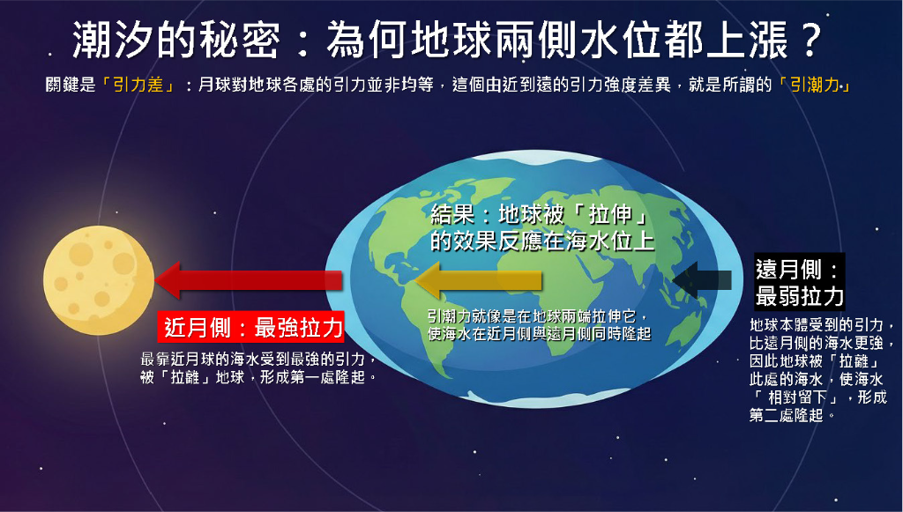

本互動式網頁由 Sheng-Han Lin 設計與開發，目前線上版本為 Ver. 19.05，敬請回饋與指教。
本系統透過互動模型，協助理解國中地球科學中「月相」與「潮汐」的核心概念。此為概念模型，天體距離比例、潮位數值大小與地形影響為示意用途，重點在於呈現各現象之間的因果關係。
左欄顯示太陽、地球與月球的位置關係，右欄顯示觀測者從地表看到的天空畫面。
左欄顯示從北極上空俯視的海水分布與天體位置，右欄顯示潮位隨時間變化。
⚠️ 為彰顯科學概念，本模擬採用概念化呈現，天體大小與距離比例並非實際比例
